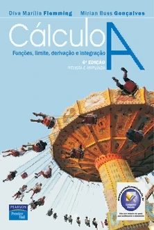
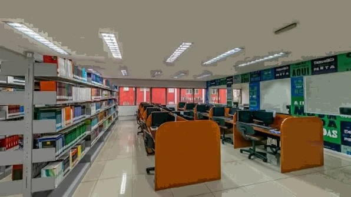
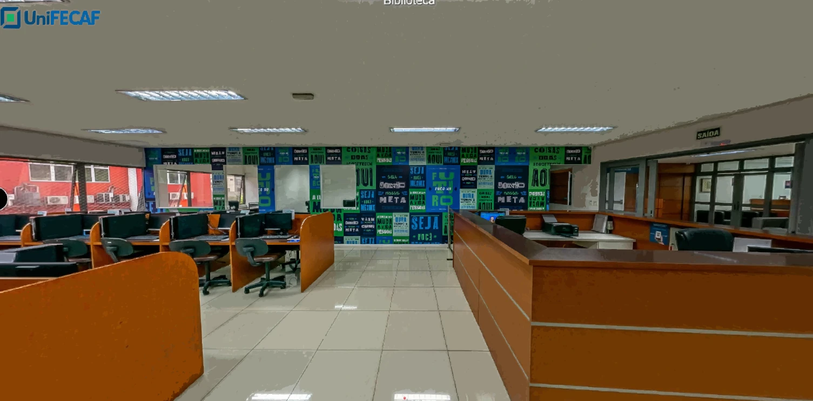
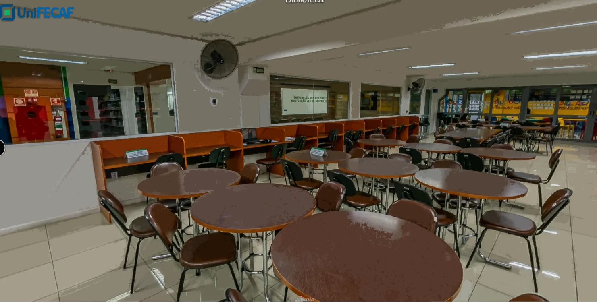
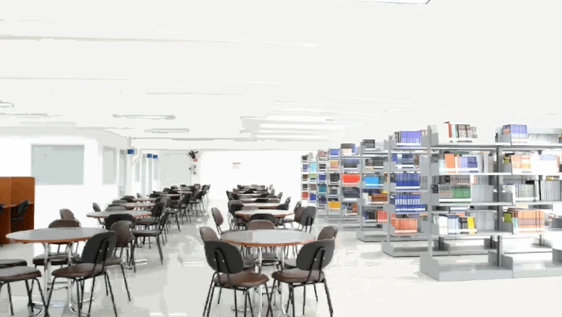
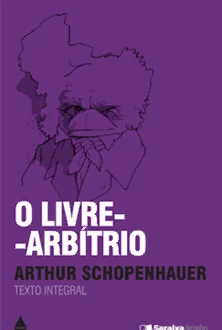
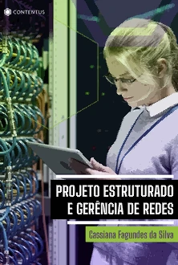
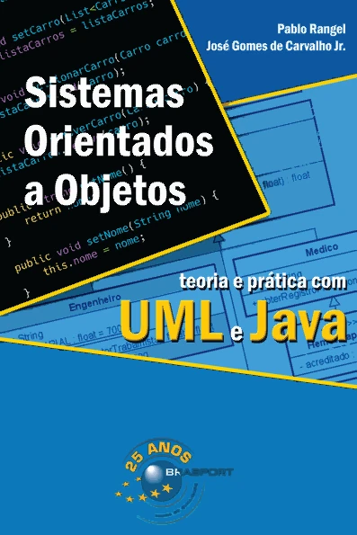
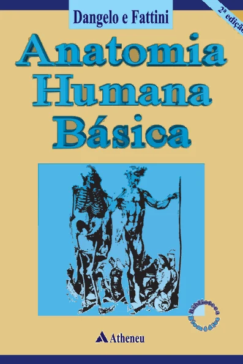
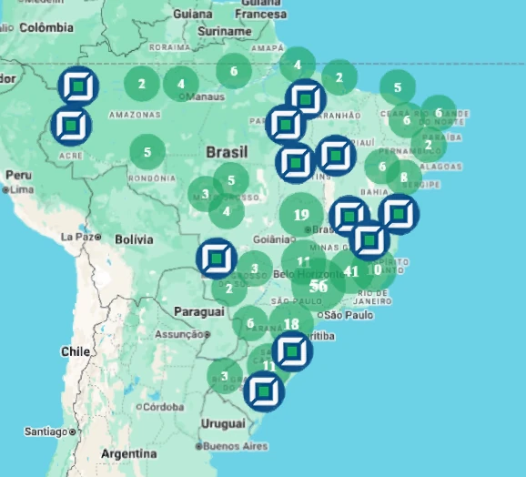

MATEMATICA
Calculo A

Explore formas de pensar diferente e transformar desafios em oportunidades.
Saiba mais →BIBLIOTECA UNIFECAF
Um lugar para pesquisar, descobrir novas ideias e seguir aprendendo durante a sua jornada acadêmica.
Explorar livrosCONHECIMENTO EM MOVIMENTO
Conhecimento é ponto de partida para novas possibilidades.
A Biblioteca UniFECAF apoia sua jornada de aprendizagem com acesso a conteúdos para pesquisar, estudar e ampliar repertórios.

Use este espaço para descobrir assuntos, aprofundar ideias e encontrar inspiração para os próximos passos.
Ver leituras em destaque


ESCOLHAS PARA INSPIRAR
Novas perspectivas para acompanhar
seus estudos e suas descobertas.
MATEMATICA

Explore formas de pensar diferente e transformar desafios em oportunidades.
Saiba mais →FILOSOFIA

O homem pode fazer o que quer, mas não pode querer o que quer.
Saiba mais →TECNOLOGIA

um guia pratico de iniciantes na area de redes e afins.
Saiba mais →LITERATURA
Um romance de Machado de Assis sobre o ciume doentio do protagonista .
Saiba mais →TECNOLOGIA

Uma leitura sobre os conceitos amplamente usado em java.
Saiba mais →BIOLOGIA

um livro de anatomia para iniciantes em areas de medicina.
Saiba mais →Capas e títulos tirados diretamente da biblioteca da UNIFECAF para a demonstração do projeto.
ESPAÇOS DE APRENDIZAGEM
As unidades e polos oficiais da UNIFECAF
UNIDADE 01
O Campus Sede da UniFECAF está localizado na Av. Vida Nova, 166 - Jardim Maria Rosa, Taboão da Serra - SP, CEP 06764-045, o canpus faz divisão com o colégio ser.
Informações oficiais ↗UNIDADE 02
O Campus Centro está localizado emRod. Régis Bittencourt, 157 - Parque Santos Dumont, Taboão da Serra - SP, 06768-000.
Consultar biblioteca ↗
Outras unidades
Conheça nossos polos. São mais de 500 polos parceiros espalhados por todo o país.
Ver página da biblioteca ↗PRECISA DE AJUDA?
Para consultar acervo, acesso às bibliotecas virtuais, renovação ou regulamento, utilize a página oficial da Biblioteca UniFECAF.
Acessar biblioteca oficial ↗